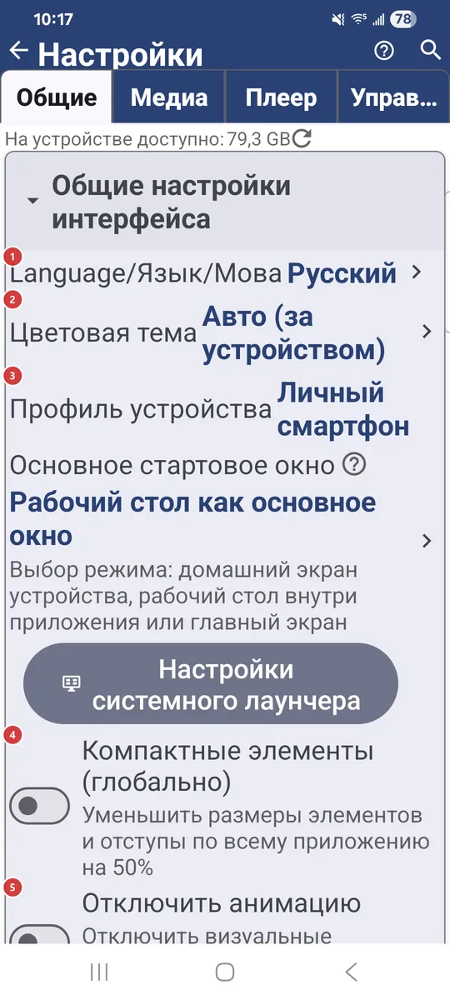
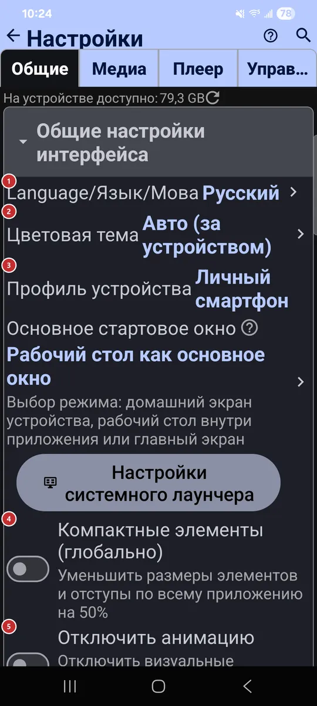

Настройки: Общие
Для чего этот экран
На вкладке «Общие» собраны настройки, которые действуют на всё приложение: язык и тема, браузер файлов, сетевые источники, резервные копии и кэш. Заходите сюда, когда что-то должно выглядеть, работать или подключаться иначе везде.


Порядок действий
Единого порядка здесь нет - каждый параметр работает сам по себе. Ниже они сгруппированы по тем же заголовкам разделов, что и на вкладке.
Элементы
Общие настройки интерфейса
1Language/Язык/МоваЗадаёт язык всего приложения.
Выберите язык в списке, и экраны переключатся на него. Тот же выбор есть на первой странице мастера приветствия.
2Цветовая темаВыбирает светлую, тёмную или цветную тему.
«Авто» следует за устройством. Остальные варианты: светлая, тёмная и зелёный, синий или красный оттенок каждой.
3Профиль устройстваПрименяет готовый набор настроек под тип вашего устройства.
Профили есть для личного смартфона, планшета, ТВ-приставки, автомагнитолы, фоторамки, электронной книги и не только. Один выбор настраивает сразу много параметров, и приложение подходит устройству без ручной возни. «Другой / Без изменений» оставляет ваши настройки как есть.
- Отмена
- Перед тем как профиль перезапишет настройки, приложение покажет, сколько параметров изменится. «Отмена» оставит всё как есть.
4Компактные элементы (глобально)Уменьшает всё, чтобы на экране помещалось больше.
Списки, кнопки и текст уменьшаются вдвое. Зоны нажатия тоже становятся меньше, поэтому сначала попробуйте на большом экране.
5Отключить анимациюОтключает переходы и декоративные анимации.
Пригодится, если анимации отвлекают или устройство работает медленно.
6Режим энергосбереженияУспокаивает приложение, когда заряд на исходе.
Останавливается непрерывная анимация, и приложение перестаёт удерживать экран включённым. Выберите, когда это начинается: никогда, всегда или ниже выбранного уровня заряда.
7Включить избранноеВключает или выключает «Избранное».
Когда оно включено, файлы можно отмечать избранными, смотреть их одним списком и выводить на виджет рабочего стола. Кнопка «Избранное» в списке ресурсов появляется вместе с ним.
8Разрешить новые окнаДобавляет действие «Открыть в новом окне».
Действие появляется в браузере файлов и в плеере. Оно удобно на планшетах, складных устройствах, Chromebook и больших экранах с несколькими окнами. Когда оно выключено, всё открывается в текущем окне.
Интерфейс списка ресурсов
9Размер ячеек сетки ресурсовЗадаёт размер плиток ресурсов в виде сетки.
Относится к списку ресурсов в списке ресурсов. Мелкие ячейки вмещают больше ресурсов, крупные удобнее читать. Сама сетка включается кнопкой вида в списке ресурсов.
10Панель программПоказывает меню программ полосой над списком ресурсов.
Полоса дублирует программы из меню, и они оказываются под рукой в одно касание. Пока панель включена, кнопка с тремя точками скрыта.
Интерфейс браузера файлов
11Разрешить режим «Все файлы»Разрешает режим «Все файлы» для ресурсов.
В этом режиме ресурс показывает и позволяет изменять файлы любых типов, а не только медиа: документы, архивы и прочее. Переключатель лишь разрешает режим, а включать его нужно отдельно для каждого ресурса.
13Показывать подпапки отдельноПоказывает подпапки отдельными элементами списка.
Подпапки появляются в списке файлов рядом с файлами. Нажмите подпапку, чтобы зайти в неё.
14Действие жеста влевоВыбирает, что делает жест по строке файла влево.
Можно назначить, например, открытие в плеере, «Отправить», сведения, избранное, копирование, перемещение, переименование, распаковку архива, удаление или ничего. Действия, которые меняют файлы, работают только в папках, куда можно записывать.
15Действие жеста вправоВыбирает, что делает жест по строке файла вправо.
Можно назначить, например, открытие в плеере, «Отправить», сведения, избранное, копирование, перемещение, переименование, распаковку архива, удаление или ничего. Действия, которые меняют файлы, работают только в папках, куда можно записывать.
Удалённые ресурсы (SMB/(S)FTP/Облако)
16Локальная сеть (Ethernet) SMBВключает подключение к общим папкам в локальной сети.
Подойдёт для домашнего NAS, компьютера с Windows и включённым общим доступом или роутера с USB-диском. Когда переключатель включён, можно добавлять SMB-ресурсы, а в списке ресурсов появляется вкладка SMB.
17Компьютер в интернете (S)FTPВключает подключение к серверам по FTP и SFTP.
Подойдёт для домашнего сервера, NAS, веб-хостинга или роутера с поддержкой (S)FTP. Когда переключатель включён, можно добавлять такие ресурсы, а в списке ресурсов появляется вкладка S/FTP.
18В облачных ресурсахВключает облачные хранилища: Google Drive, OneDrive и Dropbox.
Подключите аккаунт, и облачные папки откроются прямо в приложении. Когда переключатель включён, в списке ресурсов появляется вкладка «Облако».
Доступ к этому телефону
19SFTP-серверПозволяет другим устройствам открывать папки с этого устройства по SFTP.
Добавьте хотя бы одну общую папку, выберите вход по паролю или SSH-ключу и порт от 1024 до 65535, затем включите сервер. Другое устройство подключится по показанному здесь адресу или по коду сопряжения в FastMediaSorter. Изменив настройки, выключите и снова включите сервер, чтобы они вступили в силу.
Доступ отовсюду
20Доступ через Google DriveПозволяет другим вашим устройствам с тем же аккаунтом Google подключаться к общим папкам этого телефона.
Адрес сервера, логин и пароль кладутся в папку приложения на вашем Google Drive. Когда переключатель выключен, эти устройства видят общий доступ, но подключиться к нему не могут.
21Сервер обменаДелает общие папки этого телефона доступными из любой сети через ваш обменный сервер.
Включите переключатель, чтобы публиковать через исходящий обменный сервер: первый добавленный сервер становится исходящим сам, а кнопка «Изменить» только выбирает другой; строка состояния покажет адрес, по которому доступны папки. «Новая ссылка доступа» выдаёт свежую ссылку на общий доступ.
Авторизация и аккаунты
22Сохранённые авторизацииПоказывает входы, которые приложение сохранило на экране веб-входа.
Экран веб-входа в приложении хранит cookie и логины, чтобы приложение могло скачивать файлы с сайтов, где нужен вход. Откройте этот экран и удалите то, что больше не нужно.
23Защищать секретные экраныПрячет важные экраны от скриншотов и превью в списке недавних.
Касается экранов, на которых видны пароли: их нельзя снять на скриншот, и они не показываются в превью списка недавних приложений.
Резервные копии, восстановление и экспорт
24Выгрузить все настройки в файлСохраняет все настройки в файл.
Файл FastMediaSorter_export.xml лежит в папке Downloads. Он пригодится, чтобы перенести настройки на другое устройство или вернуться к ним позже.
25Загрузить настройки из файлаЗагружает настройки из файла экспорта.
Читает FastMediaSorter_export.xml из папки Downloads, поэтому сначала положите туда файл - например, выгруженный на другом устройстве.
- Отмена
- Если вы можете захотеть вернуться к нынешним настройкам, сначала экспортируйте их.
26Копировать настройки в Google DriveСохраняет настройки в вашем Google Drive.
В резервную копию входят все настройки, список ресурсов, сетевые пароли и сохранённые входы на сайты, поэтому храните файл копии в тайне. Входы в облака (Google Drive, OneDrive, Dropbox) не сохраняются. Когда копия появится, ниже будут видны её дата и аккаунт.
27Восстановить настройки из Google DriveВозвращает настройки из резервной копии в Google Drive.
Пригодится на новом устройстве или после сброса. Входы в облака в копию не входят, поэтому потом войдите в Google Drive, OneDrive или Dropbox заново.
28СБРОС настроекВозвращает все настройки к значениям по умолчанию.
Ресурсы и назначения остаются на месте. Перед сбросом приложение просит подтвердить действие.
- Отмена
- Если вы можете захотеть вернуть настройки, сначала экспортируйте их.
Фоновая синхронизация, сеть и кэш
29Параллелизм сетиЗадаёт, сколько сетевых операций выполняется одновременно.
Значения от 1 до 24, по умолчанию 4. Больше операций сразу могут работать быстрее в быстрой сети, меньше - бережнее для медленного соединения или слабого сервера.
30Размер предварительного кэша видеоЗадаёт, какая часть потокового видео буферизуется вперёд.
«Меньше» (0,5×) экономит место и трафик, но в медленной сети воспроизведение может прерываться. «Авто» оставляет выбор плееру. «Больше» (2×) воспроизводит плавнее в нестабильной сети и занимает больше места на диске.
31Включить фоновую синхронизациюПроверяет сетевые ресурсы на изменения файлов в фоне.
Выберите, как часто проверять, или запустите проверку сразу кнопкой «Синхронизировать сейчас». Строка ниже показывает, когда синхронизация была в последний раз.
32Предзагрузка миниатюрГотовит превью сетевых видео и PDF после каждой синхронизации.
Превью создаются в фоне, и к моменту, когда вы откроете папку, они уже готовы. Отдельный параметр ограничивает это сетями без ограничений по трафику, например Wi-Fi.
33Размер кэшаЗадаёт, сколько места на диске может занять кэш изображений.
В кэше хранятся превью и миниатюры, чтобы в следующий раз они открывались быстро. Введите размер в мегабайтах или нажмите «Авто» - приложение подберёт его по объёму памяти устройства. По умолчанию это 2 ГБ.
34Очистить кэшОчищает кэш приложения, чтобы освободить место.
Удаляются превью, миниатюры и временные файлы, скачанные из сети. Рядом с кнопкой показан текущий размер кэша, а перед очисткой приложение просит подтвердить действие. Кэш наполнится заново по мере просмотра.
- Отмена
- В кэше лежат только копии, поэтому ваши файлы не пострадают; первый просмотр папки может пройти медленнее.
35Сбор статистикиСобирает статистику использования на вашем устройстве.
Данные остаются на устройстве, автоматически ничего не отправляется. Пока сбор включён, появляется строка «Статистика», которая открывает собранное.
Сброс раздела «Общие»
36Сбросить раздел ОбщиеВозвращает к значениям по умолчанию только эту вкладку.
Настройки на других вкладках сохраняются. Перед сбросом приложение просит подтвердить действие.
Всё об этом приложении
37Загружаемые расширенияУправляет необязательными частями приложения, которые вы загружаете.
Расширения - например, распознавание текста, перевод или дополнительные декодеры - загружаются только когда они нужны и удаляются, чтобы освободить место.
38Разрешения и доступПоказывает, к чему у приложения есть доступ, и позволяет выдать его.
У каждого разрешения есть короткая подпись о том, зачем оно нужно. Выдайте нужное, а для тех, что Android не даёт запросить напрямую, откройте системные настройки.
39О системеОткрывает экран со сведениями об устройстве и приложении.
Там собраны технические данные об этом устройстве и приложении.
40Руководство пользователяОткрывает руководство пользователя в браузере.
Руководство открывается на русском, украинском или английском - в зависимости от языка приложения.
41Вводный экранСнова открывает мастер приветствия.
Пройдите страницы первого запуска ещё раз: язык, тема, профиль устройства, сетевые источники, возможности и разрешения.